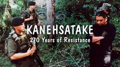

Alanis Obomsawin
Abenaki · Canada
Land references on the atlas: Ndakinna, N’dakina (Abenaki / Abénaquis)
Films 63

Christmas at Moose Factory 1971
Director · Documentary · Short
Watch · vimeo.com ↗Credit source · collection.nfb.ca ↗On the map
History of Manawan – Part 1 1973
Director · Educational filmstrip


Canada Vignettes: Wild Rice Harvest Kenora 1979
Director · Documentary

Incident at Restigouche 1984
Director · Documentary
Watch · youtube.com ↗Credit source · dafilms.com ↗On the map

Richard Cardinal: Cry from a Diary of a Métis Child 1986
Director · Documentary
Watch · youtube.com ↗Credit source · dafilms.com ↗On the map

Poundmaker's Lodge: A Healing Place 1987
Director · Documentary · Short



Kanehsatake: 270 Years of Resistance 1993
Director · Documentary · Feature

My Name Is Kahentiiosta 1995
Director · Documentary
Watch · youtube.com ↗Credit source · dafilms.com ↗On the map


Rocks at Whiskey Trench 2000
Director · Documentary
Watch · youtube.com ↗Credit source · dafilms.com ↗On the map

Is the Crown at War with Us? 2002
Director · Documentary
Watch · youtube.com ↗Credit source · dafilms.com ↗On the map


Waban-aki: People from Where the Sun Rises 2006
Director · Documentary · Feature

Gene Boy Came Home 2007
Director · Documentary
Watch · youtube.com ↗Credit source · dafilms.com ↗On the map


The People of the Kattawapiskak River 2012
Director · Documentary
Watch · youtube.com ↗Credit source · dafilms.com ↗On the map

The People of the Kattawapiskak River: Six Months Later 2012
Director


We Can't Make the Same Mistake Twice 2016
Director · Documentary · Feature

Our People Will Be Healed 2017
Director
Watch · nfb.ca ↗Watch · youtube.com ↗Credit source · dafilms.com ↗On the map


Jordan River Anderson, the Messenger 2019
Director

Honour to Senator Murray Sinclair 2021
Director · Documentary · Short
Watch · nfb.ca ↗Credit source · imaginenative.org ↗On the map


The Spirit of the Tsilqot’in People Is Hovering Over the Supreme Court 2023
Director · Documentary · Short

Sources
- production.nfbonf.ca ↗ · NFB person-specific director biography — “Alanis Obomsawin, a member of the Abenaki Nation, is one of Canada’s most distinguished filmmakers.”
- nfb.ca ↗ · National Film Board of Canada
- nfb.ca ↗ · National Film Board of Canada
- imaginenative.org ↗ · imagineNATIVE 2022 tour
- nfb.ca ↗
- collection.nfb.ca ↗
- dafilms.com ↗
- nfb.ca ↗
Cite this page
MLA
“Alanis Obomsawin.” Indigenous Cinema Atlas: Abya Yala and Turtle Island, created by John Kennedy Godoy, University of Colorado Boulder, 2026, https://jwilliamkennedy.github.io/abya-yala-film-atlas/beta/maker/DIR-0059.html. Accessed .
Chicago
Godoy, John Kennedy. “Alanis Obomsawin.” Indigenous Cinema Atlas: Abya Yala and Turtle Island. University of Colorado Boulder, 2026. https://jwilliamkennedy.github.io/abya-yala-film-atlas/beta/maker/DIR-0059.html.
Identity is recorded only from the filmmaker’s own words or an explicit biographical source; it is never inferred from a film’s subject, language or setting. Images remain with their rights holders.